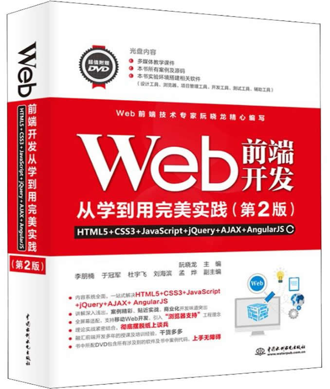

首页 > 书籍下载
《Web前端开发从学到用完美实践（第2版）》PDF下载（高清完整版)
|  | 作者：阮晓龙 |
| 出版时间：2018年08月23日 | |
| 出版社：水利水电出版社 | |
| ISBN：9787517066996 | |
| 总页数：690 |
这是一本经过数万读者检验的畅销书，同时也是作者十几年教学与企业开发经验的结晶。适合正在从事 Web 前端开发工作的工程师参考使用。
这里提供的是《Web前端开发从学到用完美实践（第2版）》的高清 PDF 下载，内容完整，附带目录标签。
这本书内容非常系统、全面，一站式解决 HTML5、CSS3、JavaScript、JQuery、AJAX、AngularJS 学习，深入浅出，引入“浏览器支持”工程理念，理论与实战相结合，让读者更能快速接受并掌握其中的开发技巧。
《Web前端开发从学到用完美实践（第2版）》自销售以来，受到了广大读者的一致好评，其中一位妈妈给孩子买了这本书，是这样评价的：
这本书我家神兽说太用途了，从初学到深入，一直在用，实用性特别强。
另外一位 Web 前端开发的从业者也给出了好评：非常好的一本web前端开发方面的书，讲的很容易学而且全面，覆盖了前端开发的全套技术，一本书解决问题，对工作帮助很大，大赞！
书籍目录
- 第1章 概述
- 1.1 Web基础
- 1.2 Web是如何工作的？
- 1.3 为什么学习Web前端开发？
- 1.4 项目管理系统
- 第2章 开发工具
- 2.1 开发工具综述
- 2.2 原型设计工具
- 2.3 开发工具
- Dreamweaver
- Studio Code
- 2.4 调试工具
- 2.5 代码托管工具
- 第3章 初识HTML5
- 3.1 HTML概述
- 3.2 HTML5的优势
- 3.3 HTML5的新征
- 3.4 HTML5文档结构
- 第4章 HTML5结构与属性
- 4.1 从HTML4到HTML5
- 4.2 HTML5基础
- 4.3 HTML5结构元素
- 4.4 超链接
- 第5章 表单
- 5.1 表单基础
- 5.2 使用form元素
- 5.3 使用input元素
- 5.4 案例：高考改革方案调查问卷网页的实现
- 5.5 案例：智能表单（用户注册）
- 第6章 多媒体
- 6.1 多媒体基础
- 6.2 HTML5音频与视频
- 6.3 播放控制
- 6.4 解决兼容问题
- 6.5 字幕
- 6.6 案例：使用播放器插件实现视频播放
- 第7章 初识CSS
- 7.1 CSS3概述
- 7.2 CSS3功能
- 7.3 在HTML中使用CSS
- 7.4 案例：基于终端设备选择不同样式
- 7.5 案例：基于浏览器选择不同样式
- 第8章 选择器
- 8.1 认识CSS选择器
- 8.2 基础选择器
- 8.3 层次选择器
- 8.4 伪类选择器
- 8.5 属性选择器
- 第9章 文字样式
- 9.1 文本样式
- ……
- 19.2 图形绘制
- 19.3 图形变换与控制
- 19.4 案例：用Canvas绘制统计报表
- 第20章 本地存储
- 20.1 基础知识
- 20.2 Cookie
- 20.3 Web Storage
- 20.4 本地数据库
- 20.5 案例：使用本地存储减少服务器数据库请求
- 第21章 地理定位
- 21.1 常见地理定位方式
- 21.2 使用HTML5实现地理定位
- 21.3 案例：使用百度地图展示当前位置
- 21.4 案例：使用百度地图展示运动轨迹
- 第22章 Web测试
- 22.1 概述
- 22.2 用户界面测试
- 22.3 兼容性测试
- 22.4 功能测试
- 22.5 性能测试
- 第23章 网站发布
- 23.1 概述
- 23.2 域名注册
- 23.3 Web服务器构建
- 23.4 网站上传
- 23.5 网站备案
- 23.6 域名解析
书籍下载
一键登录，免费下载完整版 PDF，文件名称：《Web前端开发从学到用完美实践（第2版）》.pdf